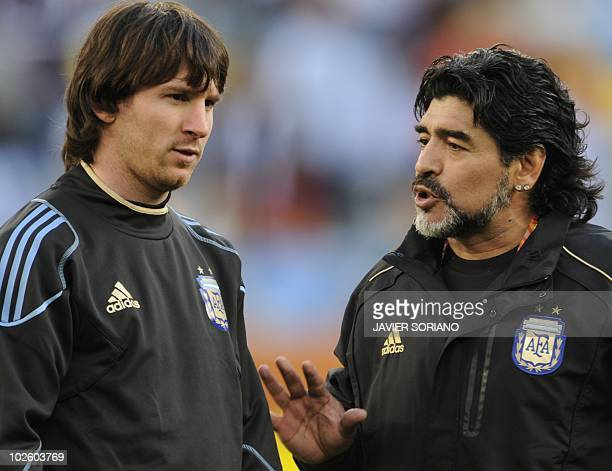

Mundial de Sudáfrica a Maradona y Messi

El Mundial de Sudáfrica 2010 es recordado por los argentinos como una competencia en la que había mucha ilusión por tener a Diego Armando Maradona en el banco como DT y a Lionel Messi en el campo de juego. Sin embargo, las cosas no salieron bien en los cuartos de final contra Alemania, donde el seleccionado fue goleado con un contundente 4 a 0. Uno de los que estaba en el banco de suplentes rival aquel día, era el exarquero Tim Wiese, quien tras su paso por el fútbol se dedicó a la lucha libre profesional.
Tim Wiese debutó en el Fortuna Colonia en el año 2000 y a partir de ahí logró una sólida carrera en la Bundesliga, donde atajó para equipos como el Borussia Dortmund y Werder Bremen, donde se destacó como uno de los más talentosos de la liga. Esto le valió para ser considerado en reiteradas oportunidades para la selección alemana, con la que disputó el Mundial y quedó eliminado en semifinales ante España por 1 a 0. No obstante, en 2014 decidió colgar los botines y subirse a un ring para cumplir uno de sus anhelados sueños.
El camino de Wiese hacia el ring fue progresivo: su primera aparición fue en un evento en Frankfurt en el que ingresó a favor del equipo conocido como The Usos, quienes se enfrentaron a Gold & Stardust en aquella oportunidad. Lo que comenzó como un hobby, luego se convirtió en algo más serio.
Wiese, de una altura de 1,93 metros, se dedicó a entrenar para ganar masa muscular y llegar a los 130 kilos, que le posibilitaron enfrentarse a otros luchadores. En junio del 2016, el alemán ingresó a la WWE, la empresa estadounidense que organiza peleas de lucha libre profesional y lo anunció a través de su cuenta personal de Twitter. El día tan esperado llegó el 3 de noviembre en el WWE live celebrado en Múnich, donde el exarquero, conocido como “The Machine”, formó un equipo con los luchadores Cesaro y Sheamus para enfrentarse a Bo Dallas y Primo & Epico.